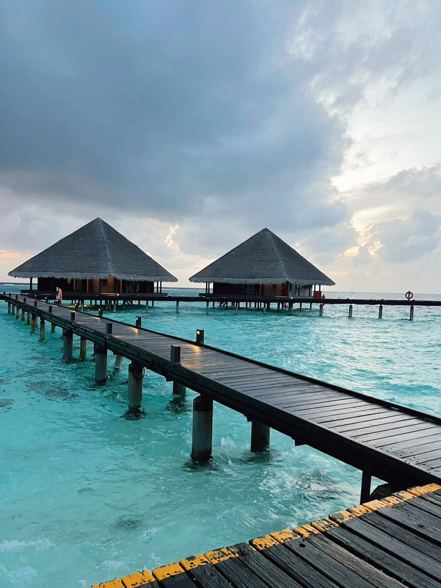

My Favorite Tourist Spots
Grand Canyon, USA
The Grand Canyon is one of the world's most awe-inspiring natural wonders. Its vast, rugged landscape is a testament to the power of erosion and a favorite destination for adventurers.

Maldives
The Maldives is a tropical paradise known for its crystal-clear waters, white sandy beaches, and luxurious resorts. It is a dream destination for relaxation and water activities.

Mount Fuji, Japan
Mount Fuji, Japan's highest peak, is a stunning volcanic mountain. Its symmetrical beauty and cultural significance make it a beloved landmark for both locals and tourists.